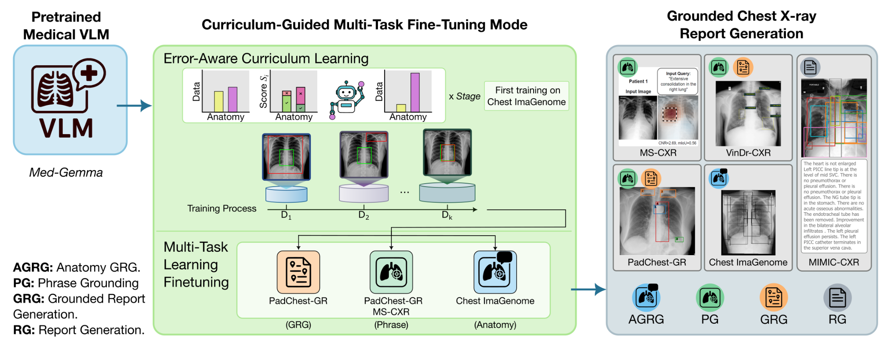
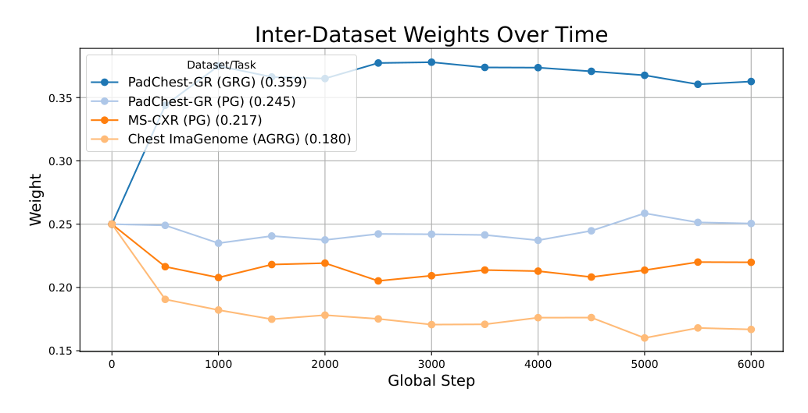
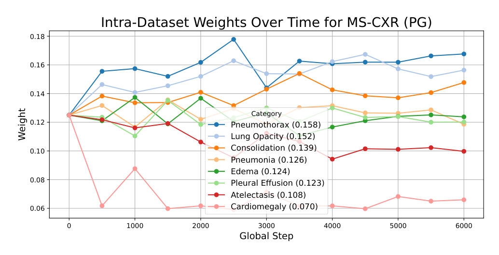
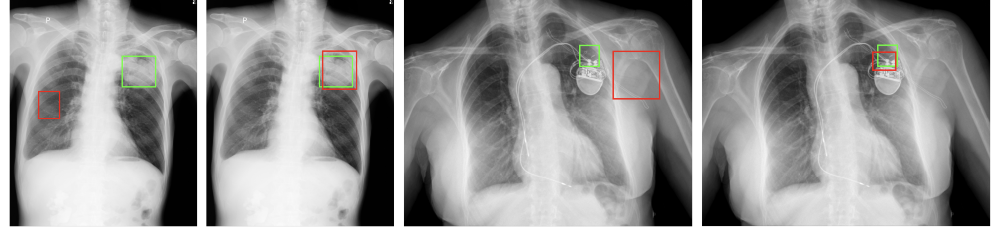

CURE 深读：不加一张新数据，凭什么把放射报告 VLM 的“一问某处就报异常”幻觉砍掉 18.6%、定位 IoU 翻倍？
导读。把通用医学 VLM 微调来写胸片报告，最危险的失败不是“写得不够全”，而是“写得太确定”：图 1 里两个模型都被要求定位左锁骨，强基线 MAIRA-2 却凭空补上一句“注意到左锁骨骨折”——图里根本没有骨折。这类假阳性幻觉恰恰来自主流做法的训练信号：phrase grounding（短语定位）的标注里每一条都是异常发现，于是模型被反复教成“被问到某个区域 = 那里有病”。CURE 的赌注是不引入任何新数据，只动训练方法学就把可靠性提上去：(1) 把“生成发现”重构成解剖级报告生成 AGRG——对每个解剖区域同时监督正常与异常描述，把异常的“先验概率”从训练里的 ≈1 拉回真实临床基率；(2) 用一个误差感知课程 $p_i=e_i/\sum_j e_j$（$e_i=1-s_i$，$s_i$ 由 IoU 与 CXRFEScore 加权而成）动态把采样预算挪向当前最做不好的任务与类别。立题问题因此很具体：当数据和参数都不准动，可靠性的杠杆到底在“喂什么”还是“怎么喂”？结果：解剖级定位 IoU 从 0.249 翻到 0.601（+0.35），六个关键解剖区域的异常幻觉率从 26.5% 降到 8.78%（−18.6 个百分点），且全程只用三个公开胸片数据集、一块 LoRA 微调的 MedGemma-4B。
PabloMessina/CURE / HF pamessina/medgemma-4b-it-cure，均 HTTP 200）。GPU 卡数/墙钟论文未说明。
1. 核心问题：可靠性的杠杆，在“喂什么数据”还是“怎么喂”？
医学 VLM 写报告已经不稀奇，难的是可靠：输出要和影像证据对齐（grounding），且不能编造不存在的发现（幻觉）。论文开篇点的痛处很具体——标准微调能把医学 benchmark 刷上去，却普遍缺乏视觉 grounding，于是可解释性差、幻觉风险高。SOTA 的 MAIRA-2 已经显式加了 grounded report generation 来对齐局部证据与文字发现，但图 1 暴露了一个更隐蔽的毛病：目标视觉区域被过度绑定到“异常发现”上，导致报告里出现假阳性。
顺着这条线，论文把可靠性差拆成两层不平衡，都不是“数据不够”能解释的：
- 数据集之间极度不平衡。Chest ImaGenome（AGRG）一家就有超过 12.9M 条潜在实例，而 MS-CXR（PG）只有 815 条、PadChest-GR 约 1.2 万条。size-proportional（按规模采样）会让小数据集几乎被淹没。
- 每个数据集内部也不平衡。解剖区域、语义类别的出现频率天差地别（受患者人群、采集协议、疾病自然频率影响）。模型于是过拟合高频区域、忽视罕见但临床重要的区域，并在那里幻觉。
- 训练信号本身有异常偏置。phrase grounding 的标注逐条都是“发现”（被标注的短语必然对应一个异常 + 框）。模型见到的“被问到某区域”几乎总伴随“那里有病”，于是把“查询某区域”学成了“报告异常”的触发器——这才是图 1 假阳性的根。
问：既然问题是数据不平衡 + 信号有偏，最直接的办法不就是多标注一些罕见区域、多补一些正常样本？为什么作者偏要约束自己“不加任何数据”？
引导：盯住“成本”和“可归因性”两件事。医学标注昂贵且需专家；更重要的是，如果靠加数据解决，你就无法判断增益来自“方法学”还是“更多数据”。论文要证的恰恰是前者。
答：CURE 把变量锁死在训练方法学这一维——同样的三个公开数据集、同样的底座，只改“怎么用”。它从两个角度同时下手：(a) 改“喂什么形式”——把 finding-generation 重构成解剖级报告生成（AGRG），让每个区域都被问到、且正常也要描述，从源头把异常基率拉回真实值；(b) 改“怎么分配预算”——用误差感知课程，把采样概率动态倒向当前最做不好的任务/类别，而不是按数据集大小或人工调好的 loss 权重静态分配。两者都不增加一条新标注，却分别针对“信号偏置”和“分布不平衡”两个病根。
Takeaway：真问题不是“数据够不够”，而是“现有数据被喂成了什么形状、按什么比例喂”。CURE 的回答是：可靠性的杠杆在训练方法学，而非数据量——这也让它的增益可被干净地归因。
2. 贡献拆解：作者明确提出了什么？
作者明确提出的贡献（论文 §1 三条）：
- 误差感知课程框架——根据模型当前表现动态调整采样分布，无需任何额外训练数据即可增强视觉 grounding。
- 把 grounding 能力迁移给原本没有它的医学 VLM——MedGemma-4B-IT 本身不具备视觉 grounding，CURE 的训练策略把这能力“装”了进去，并在更少训练数据下超过当前 SOTA 的定位表现。
- 在 Chest ImaGenome 上把六个关键解剖区域的幻觉降低 18.6%，显著提升医学 VLM 输出的可靠性与可信度，刷新视觉 grounded 报告生成的 SOTA。
支撑这三条的结构性改动其实是两个，值得单列：把 finding-generation 替换成AGRG（解剖级报告生成）以吃下最细粒度的区域标注；以及把课程做成数据集级 + 类别级两层重加权。
读数提醒：这篇的“评测姿态”值得单独标注
CURE 的主战场是grounding 的可靠性，而非刷文本指标的天花板。所以读结果时要分清两类数字：定位类（IoU、幻觉/矛盾/蕴含率）是它要赢的；纯文本类（CheXbert F1、RadGraph F1）上它常输给在私有数据（USMix）上专训的 MAIRA-2 或用 RL 直接优化 RadGraph F1 的 CXRMate-RRG24——论文对此是诚实承认的（见 §7）。把这两类混在一起看，会得出错误结论。
读者能进一步推断的是：CURE 真正推进的单一变量是“训练方法学（任务形式 + 采样调度）对可靠性的作用”。它没有改架构、没换底座、没加数据；它把“可靠性可以靠重新组织已有监督来买”这件事，用一个干净的对照（表 7 的 v1→v9 逐件消融）摆了出来。
3. 数据：三个公开胸片集，靠“一图多查”把标注撑成百万级实例
CURE 刻意只用和基线 MAIRA-2 相同的三个公开胸片数据集，以保证可比。各自的角色不同：
- Chest ImaGenome（MIMIC-CXR 的子集，仅正位片）：提供 scene-graph，把解剖区域链接到边界框和对应的报告句子——这是 AGRG 的主力。一张图能拆成多条实例（每个标注位置一条），∼237k 训练图按子任务平均生成 9–36 条指令实例，合计超过 12.9M 条潜在样本。
- PadChest-GR：报告中的短语显式 grounding 到框，支撑 GRG 与 PG 两个任务（8,489 句、155 个细粒度临床标签）。
- MS-CXR：MIMIC-CXR 派生的小数据集，提供报告短语的框标注，专用于 PG。
- VinDr-CXR：仅用于零样本评测（训练时没见过），测泛化。
| 数据集 | 任务 | # Train | # Val | # Test |
|---|---|---|---|---|
| MIMIC-CXR (Chest ImaGenome) | AGRG · Locate | 8.5M‡ | 69.9K† | 1,000* |
| AGRG · Describe | 2.3M‡ | 18.8K† | ||
| AGRG · Loc.&Desc. | 2.1M‡ | 17.4K† | ||
| MIMIC-CXR (MS-CXR) | PG | 815‡ | 169† | 176 |
| MIMIC-CXR (Test Split) | Report Generation | — | — | 3,155 |
| PadChest-GR | GRG | 3,185‡ | 455† | 915 |
| PG | 8,871**‡ | 1,297†** | 1,238 | |
| VinDr-CXR（零样本） | GRG | — | — | 3,000 |
| PG | — | — | 2,108 |
读这张表要抓两点。其一，不平衡是结构性的：AGRG 一侧动辄百万级，PG（MS-CXR）只有 815 条——这正是后面课程要解决的“数据集级不平衡”。其二，真正喂进模型的只是冰山一角：受算力限制，9000 步最多过 22.5 万条（全量的 1.74%）。换句话说，样本预算极度稀缺，怎么把这有限的预算花在刀刃上，就成了课程机制的用武之地。
3.1 把“一句话/一个标签”都拆成训练实例：PadChest-GR 的双标注增广
PadChest-GR 同时有“自然句子”和“规范临床标签”两套标注。CURE 对每个 (sentence, box list) 既造一条句子实例，又造一条标签实例。例如把“Minimal biapical pleural thickening”（句子）与标签“apical pleural thickening”分别配同一个框，生成两条样本——几乎让 PadChest-GR 的 PG 数据翻倍，同时教模型既能 ground 自然描述、也能 ground 规范术语。该增广只用于训练/验证，测试集保持未增广。这同样是“不加新图、只重组监督”的思路。
4. Pipeline：训练—评测—重加权三步闭环，每 N 步把预算挪向短板
图 2 是全文骨架。底座是预训练的 MedGemma-4B；CURE 把三个数据集统一重构成 (image, instruction, response) 三元组的细粒度指令格式，先在 Chest ImaGenome 上做一段 grounding 专项预训练，再进多任务微调。微调期间，每 N 步把模型在各任务验证子集上跑一遍，算 IoU 与 CXRFEScore，识别“任务级 + 类别级”误差，再据此更新采样器的权重，让下一段训练更偏向它最做不好的数据——如此循环。
{kind=link}

为什么要先单独在 Chest ImaGenome 上“预训练”一段，再进多任务？
消融（表 7 v6–v8）给的理由很 kexue：MedGemma-4B-IT 本身没有视觉 grounding，一上来就多任务混训，弱小的 MS-CXR PG 信号会被淹没。先用最细、最大的 Chest ImaGenome（AGRG）专门把“输出框坐标”这件事教会（grounding 启动），模型才有一个能被课程进一步打磨的初始 grounding 能力。把预训练加到 3000 步（v8），MS-CXR PG 的 IoU 才追平 MAIRA-2 的 0.495——顺序是有因果的：先装上 grounding，再用课程精修。
5. 方法：误差归一化采样为什么是“自平衡控制器”，AGRG 为什么能去异常偏置
5.1 统一的细粒度指令格式：把异质监督塞进一个模板
CURE 把每条样本写成 (image, instruction, response) 三元组，让框、短语、解剖标签、描述句这些异质监督在一个多任务框架下学习。三类任务的 I/O 形式（论文 §3.2 转写）：
- Phrase Grounding（PG）：指令
Ground the phrase: {phrase}，输出短语 + 一个或多个归一化框{phrase}: [cx,cy,w,h]...。 - Grounded Report Generation（GRG）：指令
Generate a grounded report.，输出整篇报告，其中有框标注的短语直接在文中附上坐标。 - Anatomy-Grounded Report Generation（AGRG）：分三个子任务、均匀采样以保任务平衡——
Locate the {location}（纯定位，36 个带框位置）、Describe the {location}（纯描述，38 个带文位置）、Locate and describe the {location}（二者兼有，29 个位置）。
这个多 prompt 显式拆分很关键：它把“定位”和“描述”解耦成可独立训练的技能，再在 Loc.&Desc. 子任务里合起来——既能单独补短板，又保留联合输出。
5.2 误差感知课程：从 IoU+CXRFEScore 到自平衡采样
设 $k$ 个数据源 $\mathcal D=\{D_1,\dots,D_k\}$，每个对应一个数据集及其原始监督任务。标准多任务训练按数据集大小采样：
CURE 每个 stage 跑“训练→评测→重加权”三步。评测时对每个验证源抽固定大小子集（约 200 条 Chest ImaGenome / 150 条 PadChest-GR / 100 条 MS-CXR），用 IoU 量定位、CXRFEScore 量文本临床语义相似度，合成一个表现分：
定义误差 $e_i=1-s_i$，下一 stage 的采样概率按误差归一化：
类别级（intra-dataset）同理：MS-CXR 按 8 个短语类（pneumonia、consolidation…）分组；PadChest-GR 把 155 个标签归到 26 个高层组、在组级做课程；Chest ImaGenome 的 AGRG 在子任务内按解剖位置的误差重加权。唯一例外是 PadChest-GR 的 GRG——一篇报告同时含多个共病、无法干净归类，故保持均匀采样。
问：式 2 看着就是“哪门课考得差就多刷哪门”，凭什么说它是一个会自动收敛的控制器，而不是会越刷越偏、把算力全砸在一个永远学不好的数据集上？给我两条独立的理由。
路径 A（负反馈闭环 → 误差均衡的不动点）：把训练看成离散控制系统。某源误差 $e_i$ 高 → 式 2 给它高采样概率 $p_i$ → 下一 stage 它被训得多 → 表现分 $s_i$ 升、$e_i$ 降 → 再下一 stage $p_i$ 自动回落。这是一条标准负反馈：输出（误差）反向调制输入（采样）。它的不动点不是“all-in 某个数据集”，而是各源误差被拉到大致相等——因为只要某源误差明显高于others，反馈就持续把预算往它那边挪，直到它的边际改善把误差压到与其他源齐平、$p_i$ 随之回到均衡。对比 size-proportional（式 baseline）：那是开环——权重写死、与表现脱钩，所以小数据集（MS-CXR 815 条）会被永久淹没。CURE 把“按大小分”换成“按当前还差多少分”，这正是 PadChest-GR 上相对增益大于 MS-CXR 的原因（短板被优先补）。
路径 B（与 SPL 的符号相反 → 它做的是难例挖掘）：自步学习 SPL 也用 loss 当难度信号，但它偏向选 loss 低（容易）的样本，于是形成“易者愈易”的正反馈，难尾被长期忽略——论文明确点了 SPL 这个毛病。CURE 把符号反过来：式 2 让误差高（难）的源/类获得更高采样概率，本质是在“任务/类别”这个粗粒度上做hard-example mining。两条路径独立指向同一结论：一条从控制论说“负反馈收敛到误差均衡”，一条从课程学习说“它是 anti-SPL 的难例优先”——都说明它不会发散，而是把预算动态压到当前最薄弱处。
Takeaway：式 2 不是简单的“多刷难题”，而是一个把各源/各类误差拉平的负反馈控制器；它和 size-proportional 的区别是“开环 vs 闭环”，和 SPL 的区别是“易者优先 vs 难者优先”。
{kind=link}

{kind=link}

5.3 AGRG：把“finding generation”换成“逐区域问诊”，从源头掐掉异常偏置
这是 CURE 抑制幻觉的结构性支点。Chest ImaGenome 的 scene-graph 把每个解剖位置都链到框和描述句，于是 AGRG 可以对所有区域逐一发问，且正常区域也要被描述（如“无急性骨性异常”）。而 phrase grounding 的标注里，被标注的短语逐条都是异常发现。
问：为什么仅仅“把训练任务从 phrase grounding 换成逐区域 AGRG”，就能让模型不再像图 1 那样一被问就编出异常？给两条独立理由。
路径 A（基率/标签先验，bottom-up 概率视角）：把模型学到的看成条件分布 $P(\text{异常}\mid\text{被查询的区域})$。phrase-grounding 数据里，每一条样本的查询都对应一个异常短语，所以训练分布里 $P(\text{异常}\mid\text{查询})\approx 1$——模型于是把“被问到一个区域”直接映射成“那里有异常”，这就是图 1 假阳性的生成机制。AGRG 改成对每个区域都发问、且正常/异常都监督，训练分布里的异常基率被拉回真实临床prevalence（绝大多数区域在多数片子上是正常的）。$P(\text{异常}\mid\text{查询})$ 从 ≈1 降到真实值，模型的“默认输出”随之从“报异常”变成“按证据判断”。
路径 B（缺失的负类 → 决策阈值，top-down 判别视角）：论文自己给的因果是“phrase grounding inherently biased towards abnormal findings，而 AGRG exposes the model to both normal and abnormal descriptions for each region”。从判别角度看，phrase grounding 根本没有“正常”这个负类——模型从未被训练说“这里没事”，等于一个只见过正例的分类器，决策阈值被推到极端、永远输出正类。AGRG 把“正常描述”作为负类补齐，模型才学到一个校准过的决策边界，不再无脑报阳。两条路径独立汇到同一结论：一条说“异常的先验概率被错误地训成了 1”，一条说“负类从来没进过训练集”——都指向“补上正常监督 = 把异常偏置拉回”。这也解释了表 6 里骨结构（锁骨）的幻觉为何降得最猛（从 59%+ 到 1%）：锁骨绝大多数时候正常，AGRG 给了它大量“正常”监督。
Takeaway：AGRG 抑制幻觉不是靠任何反幻觉损失或后处理，而是把训练数据的“异常基率”从 phrase-grounding 的 ≈1 修回真实值——补上一直缺席的“正常”负类，模型的默认行为就从“报异常”回到“按证据说话”。
6. 训练配置：MedGemma-4B + LoRA(r=16)、4-bit，9000 步两段式
训练账本（论文 §4 Datasets/Implementation 转写）：
| 项目 | 取值 |
|---|---|
| 底座模型 | MedGemma-4B-IT |
| 微调方式 | LoRA，rank 16，4-bit 量化 |
| 优化器 | AdamW |
| 有效 batch size | 25（per-device 5 × 梯度累积 5） |
| 学习率 | $2\times10^{-4}$，linear scheduler，warmup ratio 0.03 |
| 梯度裁剪 | max grad norm 0.3 |
| 训练步数 | 预训练 3000 步（Chest ImaGenome）+ 多任务 6000 步 = 9000 步 |
| 课程重加权间隔 | 每 3000 步（最终配置，见消融 v5/v9） |
| 图像分辨率 | 448×448（Albumentations 处理） |
| 数据增广 | CLAHE（50% 概率，clip 1.0–4.0）+ 空间变换（随机裁剪、平移/缩放±10%/旋转±15°）；禁用水平翻转（胸腔左右不对称）、禁用 color jitter/高斯噪声 |
一个容易被忽略但很 kexue 的工程细节：box-aware 增广
整条训练管线是“边界框感知”的：空间增广时 Albumentations 同步变换框坐标，且喂给模型的 ground-truth 文本监督也动态更新成增广后的坐标，保证“图—框—文”三者始终对齐。这看似琐碎，却是 grounding 任务的命门——若增广破坏了框-文对齐，模型学到的就是错位的监督。此外 30% 的训练样本绕过空间增广、走确定性验证管线以稳住训练。
关于算力（粗估，不等同账单）
论文未披露 GPU 卡数与墙钟时间，只给了“LoRA + 4-bit、有效 batch 25、9000 步”。可以确定的是复现门槛远低于全量微调：4-bit + LoRA(r=16) 让 4B 模型可在单卡（消费级/单张数据中心卡）上跑，per-device batch 仅 5。但具体卡时论文未说明，此处不做 GPU-hours 估算，以免给出连“按论文披露数字粗略估算”都无依据的数字。
7. 实验：定位类全面赢，文本类对私有数据/RL 模型诚实认输
判断：四组任务（PG / AGRG / GRG / RG）测的是同一件事——“CURE 的训练方法学，能不能在不加数据的前提下把 grounding 可靠性提上去”。先看它赢的（定位、幻觉），再看它认输的（纯文本），后者恰恰印证了 §2 的评测姿态。
7.1 短语定位（PG）：三个数据集全赢，含零样本 VinDr-CXR
| Model | MS-CXR | PadChest-GR | VinDr-CXR（零样本） | |||
|---|---|---|---|---|---|---|
| IoU Mi.↑ | IoU Ma.↑ | IoU Mi.↑ | IoU Ma.↑ | IoU Mi.↑ | IoU Ma.↑ | |
| MAIRA-2 | 0.495 | 0.453 | 0.280 | 0.288 | 0.161 | 0.114 |
| CURE | 0.552 | 0.495 | 0.453 | 0.438 | 0.243 | 0.205 |
CURE 在所有指标、所有数据集上压过 MAIRA-2，且PadChest-GR 的相对增益（0.280→0.453）明显大于 MS-CXR（0.495→0.552）——这正对应 §5.2 的预测：课程把预算优先倒向误差更高的短板（PadChest-GR）。零样本 VinDr-CXR 上 0.161→0.243 说明能力能迁移到训练未见的分布。
7.2 解剖级报告生成（AGRG）：定位 IoU 翻倍，这是全文最强证据
| Model | IoU↑ | F1-Mi↑ | F1-Ma↑ | Cos.↑ | CXRFEScore↑ |
|---|---|---|---|---|---|
| MAIRA-2 | 0.249 | 0.377 | 0.098 | 0.587 | 0.357 |
| MedGemma-4B-IT | — | 0.266 | 0.227 | 0.662 | 0.467 |
| CURE | 0.601 | 0.529 | 0.234 | 0.691 | 0.549 |
IoU 0.249→0.601（+0.352，翻倍多）是摘要里“+0.35 IoU”的来源。由于底座 MedGemma 本身完全没有视觉 grounding（IoU 一栏是“—”），这条直接证明 CURE 的训练把 grounding 能力从无到有装了进去。同时 F1-Mi、Cos.、CXRFEScore 也都登顶——定位准的同时文本质量没塌。
7.3 Grounded 报告生成（GRG）：定位赢，文本对私有数据训练的 MAIRA-2 认输
| Model | PadChest-GR | VinDr-CXR（零样本） | ||||||||
|---|---|---|---|---|---|---|---|---|---|---|
| IoU↑ | F1-Mi↑ | F1-Ma↑ | Cos.↑ | CXRFES↑ | IoU↑ | F1-Mi↑ | F1-Ma↑ | Cos.↑ | CXRFES↑ | |
| MAIRA-2 | 0.256 | 0.591 | 0.321 | 0.844 | 0.616 | 0.217 | 0.546 | 0.256 | 0.824 | 0.591 |
| MedGemma-4B-IT | — | 0.144 | 0.203 | 0.733 | 0.517 | — | 0.209 | 0.212 | 0.779 | 0.596 |
| CURE | 0.265 | 0.507 | 0.270 | 0.819 | 0.574 | 0.262 | 0.505 | 0.246 | 0.832 | 0.540 |
这张表要分两层读。定位上 CURE 赢（PadChest-GR IoU 0.265 vs 0.256；零样本 VinDr-CXR 0.262 vs 0.217）。纯文本上 MAIRA-2 赢（F1/Cos./CXRFES），但论文坦言这是因为 MAIRA-2 额外在私有 USMix 数据（193K 纯文本 + 69K grounded 报告）上预训练过，而 PadChest-GR 的 GRG 训练实例远少于其 PG/AGRG 版本。即便如此，CURE 仍把 MedGemma 的文本指标大幅拉高。这是 §2“评测姿态”的现场印证：CURE 要赢的是 grounding，文本天花板它没去抢。
7.4 传统报告生成（RG）：CURE(AGRG+GRG) 的召回登顶
| Model | F1-Ma↑ | F1-Mi↑ | R-Ma↑ | R-Mi↑ | Cos.↑ | CXRFES↑ | RaTES↑ | RadF1↑ |
|---|---|---|---|---|---|---|---|---|
| CXRMate-RRG24 | 0.414 | 0.589 | 0.415 | 0.563 | 0.764 | 0.656 | 0.577 | 0.255 |
| MAIRA-2 (w/ grounding) | 0.304 | 0.489 | 0.283 | 0.397 | 0.751 | 0.603 | 0.496 | 0.120 |
| MAIRA-2 (w/o grounding) | 0.386 | 0.554 | 0.384 | 0.533 | 0.693 | 0.576 | 0.501 | 0.143 |
| MedGemma-4B-IT | 0.382 | 0.547 | 0.494 | 0.692 | 0.714 | 0.580 | 0.532 | 0.112 |
| CURE (GRG) | 0.314 | 0.463 | 0.290 | 0.376 | 0.725 | 0.526 | 0.447 | 0.077 |
| CURE (AGRG) | 0.400 | 0.559 | 0.539 | 0.749 | 0.783 | 0.645 | 0.592 | 0.181 |
| CURE (AGRG+GRG) | 0.415 | 0.562 | 0.582 | 0.781 | 0.792 | 0.655 | 0.597 | 0.176 |
RG 是“把 AGRG/GRG 设置重新利用来写整篇报告”。CURE(AGRG) 把 29 个解剖位置的描述拼成报告，召回登顶（R-Ma 0.539 / R-Mi 0.749）；CURE(AGRG+GRG) 进一步把召回推到 0.582 / 0.781、并拿下 F1-Ma 0.415、Cos. 0.792、RaTES 0.597。最强的 CXRMate-RRG24 在 RadGraph F1 上领先（0.255）——但论文指出这与它直接用 RL 优化 RadGraph F1 当奖励有关，属预期之中。CURE 在“覆盖全（召回）+ 语义对（Cos./RaTES）”上的优势，正来自 AGRG 逐区域问诊的全面性。
7.5 幻觉与可靠性：六区域异常幻觉 26.5%→8.78%，但要诚实读懂个别反例
论文用 Gemini 2.5 Flash Lite 做 NLI（自然语言推断），把模型对某解剖区域的生成描述与完整 ground-truth 报告比对，量化三件事：异常发现幻觉率、矛盾率、蕴含率。评测在 6 个关键解剖位置各 300 例（共 1800 张）上做。
| 解剖位置 | Model | Abn.↓ | Cont.↓ | Entail.↑ |
|---|---|---|---|---|
| Cardiac Silhouette | MAIRA-2 | 2.00 | 8.00 | 25.00 |
| CURE | 25.67 | 27.67 | 47.33 | |
| Left Clavicle | MAIRA-2 | 59.00 | 22.67 | 5.00 |
| CURE | 1.00 | 7.00 | 32.67 | |
| Left Lung | MAIRA-2 | 12.00 | 56.33 | 21.67 |
| CURE | 7.00 | 32.33 | 41.67 | |
| Right Clavicle | MAIRA-2 | 62.67 | 20.33 | 1.67 |
| CURE | 1.00 | 7.33 | 27.67 | |
| Right Lung | MAIRA-2 | 10.67 | 53.67 | 29.33 |
| CURE | 11.67 | 27.00 | 46.00 | |
| Spine | MAIRA-2 | 12.67 | 38.33 | 13.00 |
| CURE | 6.33 | 3.33 | 41.67 | |
| Mean Anatomies | MAIRA-2 | 26.50 | 33.22 | 15.94 |
| CURE | 8.78 | 17.44 | 39.50 |
问：表 6 平均看 CURE 完胜（幻觉 26.5%→8.78%），但 Cardiac Silhouette 这一行 CURE 的异常幻觉 25.67% 反而远高于 MAIRA-2 的 2.00%——这不是打脸吗？该怎么诚实地读这张表？
答：不能只看“平均赢”。两件事要分开说清楚。(1) 骨结构是 AGRG 机制最对症的地方，所以降幅最猛。左/右锁骨从 59%/62.67% 暴跌到 1.00%/1.00%——锁骨绝大多数时候正常，phrase grounding 几乎只在“有骨折”时标注它，于是 MAIRA-2 一被问就报骨折（正是图 1）；AGRG 给了锁骨大量“正常”监督，异常基率被拉回，幻觉随之崩塌。这是 §5.3 路径 A/B 的最强现场验证。(2) Cardiac Silhouette 是诚实的反例，但 CURE 的失败模式不同。看全三列：CURE 在心影上异常幻觉(25.67)和矛盾(27.67)都比 MAIRA-2 差，但蕴含率反而更高（47.33 vs 25.00）——说明 CURE 对心影说得更多、更具体（更多真阳描述被蕴含），代价是也更容易在这个本就难判的区域（心影大小判断依赖比例、个体差异大）误报。论文据此只敢说“across almost all categories”CURE 矛盾更低、蕴含更高，明确承认个别解剖（如心影）MAIRA-2 幻觉率略低。把这条放进 §5.3 的框架：AGRG 修的是“被问就报异常”的系统性偏置，对“本身难判、正常/异常边界模糊”的区域（心影）帮助有限，甚至因为“更敢说”而在单一指标上吃亏。
Takeaway：表 6 的正确读法是“系统性偏置被大幅修正（骨结构幻觉近乎归零），但非全胜”——心影这类边界模糊区域 CURE 反而幻觉更高。把它当“平均砍 18.6%”一句带过，会掩盖这个真实的失败模式。
8. 消融：v1→v9 逐件加，证明“课程 + 解剖预训练 + 调参”各自有功
表 7 是这篇最 kexue 的部分——从“裸多任务”(v1) 出发，每次只加一个部件，看它对四类 grounding 任务的边际贡献。
| 配置 | AGRG IoU↑ | GRG(PC) IoU↑ | GRG(VD) IoU↑ | PG·MS↑ | PG·PC↑ | PG·VD↑ |
|---|---|---|---|---|---|---|
| MAIRA-2（外部基线） | 0.249 | 0.256 | 0.217 | 0.495 | 0.280 | 0.161 |
| v1: Base（无 Aug/CL/CIG） | 0.380 | 0.171 | 0.207 | 0.388 | 0.356 | 0.191 |
| v2: +Aug | 0.360 | 0.185 | 0.221 | 0.398 | 0.366 | 0.203 |
| v3: +Aug +CL(1.5k) | 0.399 | 0.179 | 0.224 | 0.409 | 0.383 | 0.210 |
| v4: +Aug +CL(2k) | 0.394 | 0.193 | 0.222 | 0.393 | 0.383 | 0.196 |
| v5: +Aug +CL(3k) | 0.411 | 0.180 | 0.217 | 0.430 | 0.393 | 0.205 |
| v6: +Aug +CIG(1k) +CL(3k) | 0.454 | 0.195 | 0.232 | 0.457 | 0.394 | 0.219 |
| v7: +Aug +CIG(2k) +CL(3k) | 0.448 | 0.203 | 0.227 | 0.467 | 0.403 | 0.222 |
| v8: +Aug +CIG(3k) +CL(3k) | 0.486 | 0.207 | 0.233 | 0.495 | 0.421 | 0.224 |
| v9 (CURE): +Aug +CIG(3k) +CL(3k) +HPS | 0.601 | 0.265 | 0.262 | 0.552 | 0.453 | 0.243 |
问：从表 7 能读出几个独立结论？哪一步贡献最大，又有没有“加了反而退步”的细节？
答：至少四条，且彼此独立可验证。(1) 仅任务重构就够强：最朴素的 v1（无任何花活）在 AGRG（0.380 vs 0.249）和零样本 VinDr PG（0.191 vs 0.161）上已经超过 MAIRA-2——这单独证明“细粒度任务重构”本身就是主要功臣，不靠后面的部件。(2) 课程的“频率”不是越勤越好：v3/v4/v5 把重加权间隔从 1.5k→2k→3k，3k(v5) 整体最好；更新太频繁会去追逐评测子集的噪声（每次只抽 100–200 条评测），3000 步的间隔让误差估计更稳——这与 §5.2“别追噪声”一致，故最终采用 3k。(3) 解剖预训练贡献最大且单调：v6→v8 把 CIG 预训练从 1k 加到 3k，AGRG IoU 0.454→0.486、MS-CXR PG 追平 MAIRA-2 的 0.495——印证 §4“先装 grounding 再精修”的顺序因果。(4) HPS 一步跳变最大：v8→v9 仅加超参搜索，AGRG IoU 就从 0.486 跳到 0.601、GRG(PC) 0.207→0.265 反超 MAIRA-2。也有诚实的局部退步：v1→v2 加 Aug 时 AGRG IoU 反而从 0.380 掉到 0.360（增广对纯解剖定位短期有扰动），但它稳住了 PG（三列都升），属可接受的权衡。
Takeaway：表 7 把“CURE 为什么 work”拆得很干净：任务重构是地基（v1 已超 SOTA），课程频率要选稳（3k）、解剖预训练要够久（3k）、HPS 临门一脚最关键——四个部件各司其职，没有一个是装饰。
{kind=link}

9. 局限与复现门槛：什么时候 CURE 帮不上忙，甚至更糟？
| 边界 | 论文/方法信息 | 读者应如何理解 |
|---|---|---|
| 个别解剖反而更易幻觉 | 表 6：Cardiac Silhouette 异常幻觉 25.67% > MAIRA-2 2.00% | AGRG 修的是“被问就报异常”的系统偏置；对心影这类边界模糊、依赖比例判断的区域帮助有限，甚至因“更敢说”而单指标吃亏 |
| 纯文本指标输给私有/RL 模型 | 表 4/5：CheXbert F1、RadGraph F1 不及 MAIRA-2(USMix 私有预训练) / CXRMate-RRG24(RL 优化 RadGraph) | CURE 的目标是 grounding 可靠性，不是文本天花板；与“额外私有数据/直接优化该指标”的模型比纯文本本就不公平 |
| 仅评测胸片（CXR） | 三训练集 + 一零样本集全是胸部 X 光 | 方法学（课程 + AGRG 重构）原则上可迁移，但论文未在 CT/MRI/其它部位验证，跨模态泛化未知 |
| 样本预算极小（1.74%） | 9000 步最多过 22.5 万条 ≈ 全量 1.74% | 课程的价值正建立在“预算稀缺”上；若预算充裕，size-proportional 与课程的差距可能收窄——论文未做此对照 |
| 幻觉评测依赖 LLM 裁判 | 表 6 的 NLI 用 Gemini 2.5 Flash Lite 判定矛盾/蕴含 | 裁判模型本身可能有偏/噪声；绝对数值需谨慎，趋势（系统性下降）比单点更可信 |
| 算力门槛（正面）但卡时未披露 | LoRA(r=16)+4-bit、batch 25、9000 步；GPU 卡数/墙钟未给 | 复现门槛低（可单卡），但论文未说明具体卡时，无法估 GPU-hours |
这篇最容易被过度宣传成什么
容易被说成“一个框架通杀幻觉、还不用加数据”。更严谨的说法是：CURE 用“解剖级报告重构（补齐正常监督、拉回异常基率）+ 误差感知课程（负反馈把预算动态倒向短板）”两个不加数据的方法学改动，把一个本无 grounding 的 MedGemma-4B 调成定位 IoU 翻倍（0.249→0.601）、六区域系统性异常幻觉砍掉 18.6 个百分点的可靠胸片报告器；但它只在胸片上验证、纯文本指标输给私有/RL 模型、且对心影等边界模糊区域反而可能更易幻觉。它推进的核心变量是“训练方法学对可靠性的作用”，不是宣告“医学 VLM 幻觉已解决”。
结语：几点学术判断
一句话总结：CURE 在“不加任何新数据、不改架构”的硬约束下，靠两个方法学杠杆把医学 VLM 的可靠性撬起来——把 finding-generation 重构成逐区域、正常异常都监督的 AGRG（从源头把 phrase-grounding 的异常基率 ≈1 拉回真实值，掐掉“一问就报异常”的假阳性），以及误差感知课程 $p_i=e_i/\sum e_j$（一个把各任务/各类误差拉平的负反馈控制器，把稀缺的样本预算动态倒向当前最薄弱处）；于是一块 LoRA 微调的 MedGemma-4B，解剖级定位 IoU 翻倍、六区域异常幻觉降 18.6 个百分点。
- 可靠性可以靠“重组监督”来买，而非靠加数据：AGRG 不引入一张新图，只是让每个区域都被问到、正常也要描述——异常的“先验概率”被修回真实基率，假阳性幻觉随之崩塌（骨结构从 59%+ 到 1%）。这是“改数据的形状而非数量”的范例。
- 误差归一化采样是控制器，不是简单的“多刷难题”：式 2 的不动点是“各源误差均衡”，与 size-proportional（开环、按大小）和 SPL（偏好易样本）符号相反；图 4/5 把这条负反馈跑成了可见曲线（GRG 权重升、AGRG 权重降、Cardiomegaly 迅速让出）。
- 诚实读表，别被平均值骗：表 6 平均砍 18.6%，但心影一行 CURE 反而更易幻觉；表 4/5 纯文本输给私有/RL 模型。优点（系统偏置被修正）和软肋（边界模糊区域、纯文本天花板）来自同一组设计取舍。
留给后续的两个反驳/验证路径：(a) “课程 vs size-proportional”的等预算直接对照——论文证了课程优于裸多任务，但未在充裕样本预算下比课程相对 size-proportional 的增益是否仍显著（§9 已点出预算稀缺是前提）；(b) 把 AGRG 重构迁到 CT/MRI 或其它部位，验证“补齐正常监督→拉回异常基率”是否是跨模态通用的去幻觉机制，还是只在“区域多数正常”的胸片骨结构上特别灵。
资料来源与图像说明
- Pablo Messina, Andrés Villa, Juan León Alcázar, Karen Sánchez, Carlos Hinojosa, Denis Parra, Álvaro Soto, Bernard Ghanem. CURE: Curriculum-guided Multi-task Training for Reliable Anatomy Grounded Report Generation. CVPR 2026（CVF pp. 36279–36289）/ arXiv:2601.15408v2（PUC Chile · CENIA · iHEALTH · KAUST）。代码：
github.com/PabloMessina/CURE（HTTP 200）；模型权重：huggingface.co/pamessina/medgemma-4b-it-cure（HTTP 200）；CVF PDF（HTTP 200）。 - 本文公式（式 1–2、自适应 $\alpha$、size-proportional baseline）、表格（表 1–7）与全部实验数字以 arXiv PDF 为准。表 5（RG）与表 7（消融）原表列数较多，本页节选代表性列并已在表题注明“全表见原文”（表 5 略去 P-Ma/Mi，表 7 略去各 CXRS 列）；表 6（幻觉）为全转写。所有 ± 标准差源自论文的 1000 次 bootstrap。
- kexue:su 方法与归因（红线说明）：第 1、5、7、8 节的机制推导——“误差归一化采样为何是自平衡负反馈控制器（不动点=误差均衡）vs size-proportional 开环 vs SPL 易样本偏好”、“AGRG 为何从异常基率/缺失负类两路结构性去幻觉”——均按
kexue:su方法（动机先行、假设显式、≥2 条独立路径交叉验证）重新推导。本次kexue:su语料检索未返回任何与课程学习/自步学习/类别不平衡重加权/采样调度相关的卡片（注入检索仅返回宇宙学、植物学、恒星色彩、数学随笔等明显离题条目；本地 CLI 检索在本环境不可用）。因此本文不作任何 [archives/XXXX] 苏剑林归因——按红线，仅应用方法学、不虚构引用。文中 MedGemma/MAIRA-2/GRPO-RL(CXRMate-RRG24)/CXRFEScore/RadGraph 等均按各自原始论文归属，未借 kexue 转引。 - 图像说明：图 1（teaser，p1）、图 2（总览，p4）、图 3（定性，p8）为本地 PNG，由
extract_figures.py（PyMuPDF，caption 锚定）从 arXiv PDF 裁切；图 4/图 5（附录 p13 的课程权重演化）为矢量绘图，原 caption 锚定提取会截断顶部图例，故改用 PyMuPDF 按页坐标重裁（clip 至完整坐标轴+图例）后采用，路径assets/figures/cure/。提取器跳过的附录文本面板（fig 5/6/7 的另一些 caption 命中处，含纯表格/无图形）未使用，相关内容已在正文转写为 HTML 表格/文字。